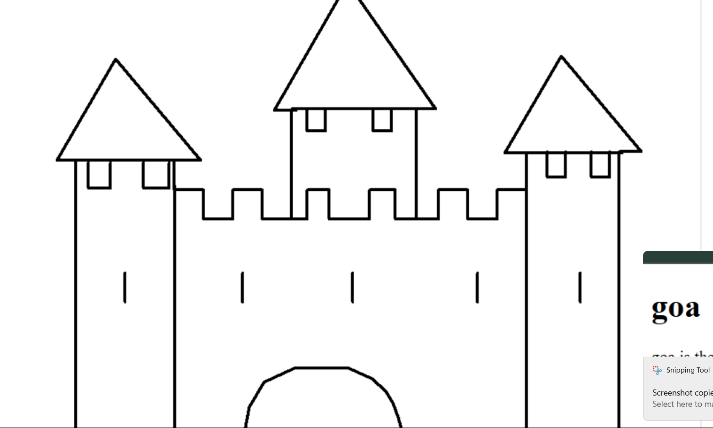

Hypertext is text displayed on a computer display or other electronic devices with references (hyperlinks) to other text that the reader can immediately access.[1] Hypertext documents are interconnected by hyperlinks, which are typically activated by a mouse click, keypress set, or screen touch. Apart from text, the term "hypertext" is also sometimes used to describe tables, images, and other presentational content formats with integrated hyperlinks. Hypertext is one of the key underlying concepts of the World Wide Web,[2] where Web pages are often written in the Hypertext Markup Language (HTML). As implemented on the Web, hypertext enables the easy-to-use publication of information over the Internet.
